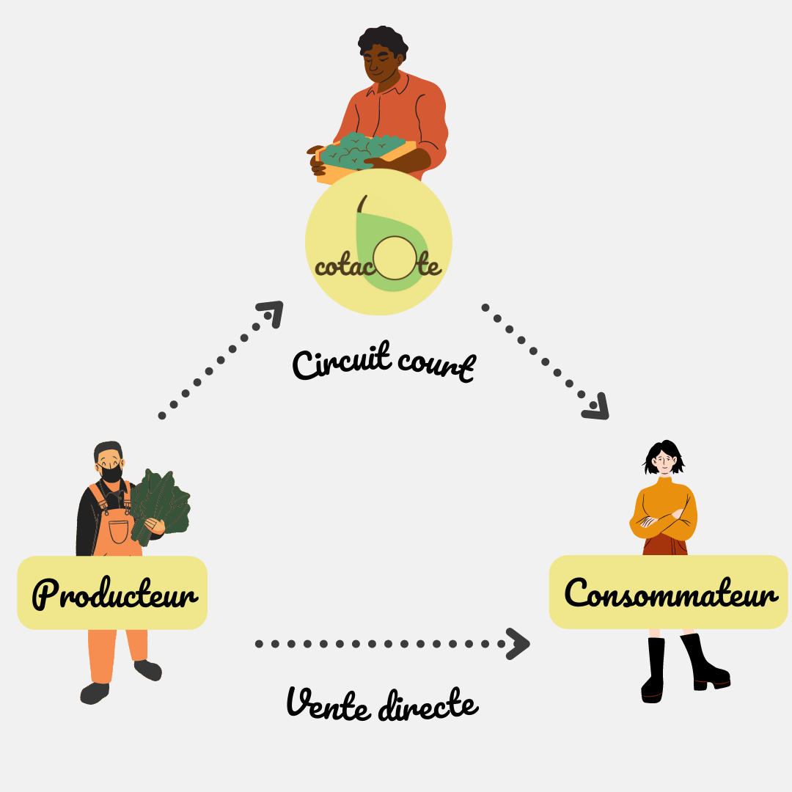

La mission qui nous anime : vous permettre de manger des fruits et légumes locaux, en circuit-court, tout en aidant les producteurs. Tout ça c'est possible !
Les problématiques sont nombreuses pour ceux qui nous nourissent. En voici 3 que nous pouvons régler ensemble 😉
Distributeur, Grossiste, Détaillant. Autant d'intérmédiaires, jusqu'au consommateur, qui vont se rémunérer et réduire le salaire du producteur.
Pour contourner les problèmes des intermédiaires, les producteurs font de la vente directe. Cette solution pour une meilleure rémunération demande un investissement financier, technique et un temps non négligeable.
Les fruits et légumes sont dits "moches" lorsqu'ils ne correspondent pas aux standard de la grande distribution et plus globalement aux attentes des consommateurs. Ces produits ne seront pas vendus, impossible de les mettre sur les étales de supermarché avec les produits "normaux". En plus d'être du gâchi, c'est un manque à gagner. Pourtant ces produits sont tout aussi qualitatif que les autres...
En utilisant l'application Cotacote, vous permettez une meilleure rémunération du producteur.
Nous nous positionnons en intermédiaire dans une démarche de circuit-court. Grâce à ce système, nous servons
de "distributeur" et de point de vente virtuel pour le producteur :
Il n'a plus besoin de gérer un point de vente.
De plus, avec ce fonctionnement, le producteur peut s'affranchir des standard de la grande distribution.
Il vendra plus facilement des produits "moches" car ce sont aussi des signes d'authenticité que l'on recherche en achetant
au producteur.
Avec Cotacote, vous soutenez l'économie locale et valorisez le travail des producteurs de la région en
profitant de bons produits locaux. Vous êtes content, les producteurs aussi et nous, nous sommes ravis !
😎

Cliquez sur le bouton ci-dessous et rejoignez l'aventure !
Nous nous engageons à ne pas sur-interpréter l'adjectif local. Pour nous, un produit est local si il est produit dans un rayon maximum de 30km entre le producteur et le consommateur.
Il est important pour nous que le travail de ceux qui nous nourissent soit le mieux rémunéré possible. Nous n'interviendrons jamais dans le prix de vente de nos producteurs partenaires car eux seuls savent ce que vaut le fruit de leur labeur.
Nous nous engageons avec nos producteurs partenaires à ne poser aucune contrainte sur le calibre des produits. Ensemble, nous donnons priorité aux produits qui ne trouveraient pas leur place dans un circuit traditionnel.
Ou plutôt qui suis-je ... 😅
Je m'appelle Benjamin je suis étudiant en Informatique à l'Université de Lille. Je développe ce projet au sein du Pépite Lille depuis Novembre 2021. Pour les plus curieux, me voici en compagnie d'un poney.
Je suis parti du constat que, en ville, nous manquons de produits fermiers et véritablement locaux alors qu'à Lille par exemple, nous avons des exploitations de toutes sortes à quelques kilomètres du centre ville. Je me suis alors interessé au circuit-court et aux besoins des consommateurs en lien avec les problèmes des producteurs. Mon but est de réaliser un projet qui dans lequel tout le monde y trouve son compte.